Expert puzzles don’t need Sudoku tricks, they require advanced Sudoku strategies and solid logic. If you need new tactics for hard Sudoku puzzles and beyond, these advanced techniques will help.
This post walks you through 11 advanced Sudoku techniques, step-by-step, so you can solve tough puzzles with ease. Grouped by logic type, you can find the best technique for the difficult puzzle you’re trying to solve.
Table of Contents
- W-Wing
- XY-Wing (Y-Wing)
- XYZ-Wing
- X-Wing
- Swordfish
- Skyscraper
- Unique Rectangle
- Locked Candidates
- ALS-XZ
- Forcing Chains
- X-Cycles
Wing-Based Sudoku Strategies
Wing strategies use small patterns of related candidates, usually in two or three cells, to make eliminations based on if-then logic. These techniques often rely on two types of cells:
- Bi-value cells: Cells with just two candidates
- Tri-value cells: Cells with only three candidates
1. W-Wing
The W-wing strategy is an elimination technique that combines two non-interacting bi-value cells with the same candidates that are connected by one strong link (conjugate pair) to force a logical outcome. Because the setup is easy to spot, you can use this strategy midway through solving or even later in the process.
| Best for | Medium to hard puzzles when simpler eliminations are exhausted |
|---|---|
| Key components | 2 bi-value cells that don’t interact but have the same pair of candidates (x, y) and that each have a strong link between x |
| Required link | A strong link between one shared candidate (x) must bridge the bi-value cells. |
| Elimination | Remove candidate y from any cell that sees both bi-value cells. |
| Conditions for failure | The bi-value cells share a unit, or the strong link doesn’t align. |
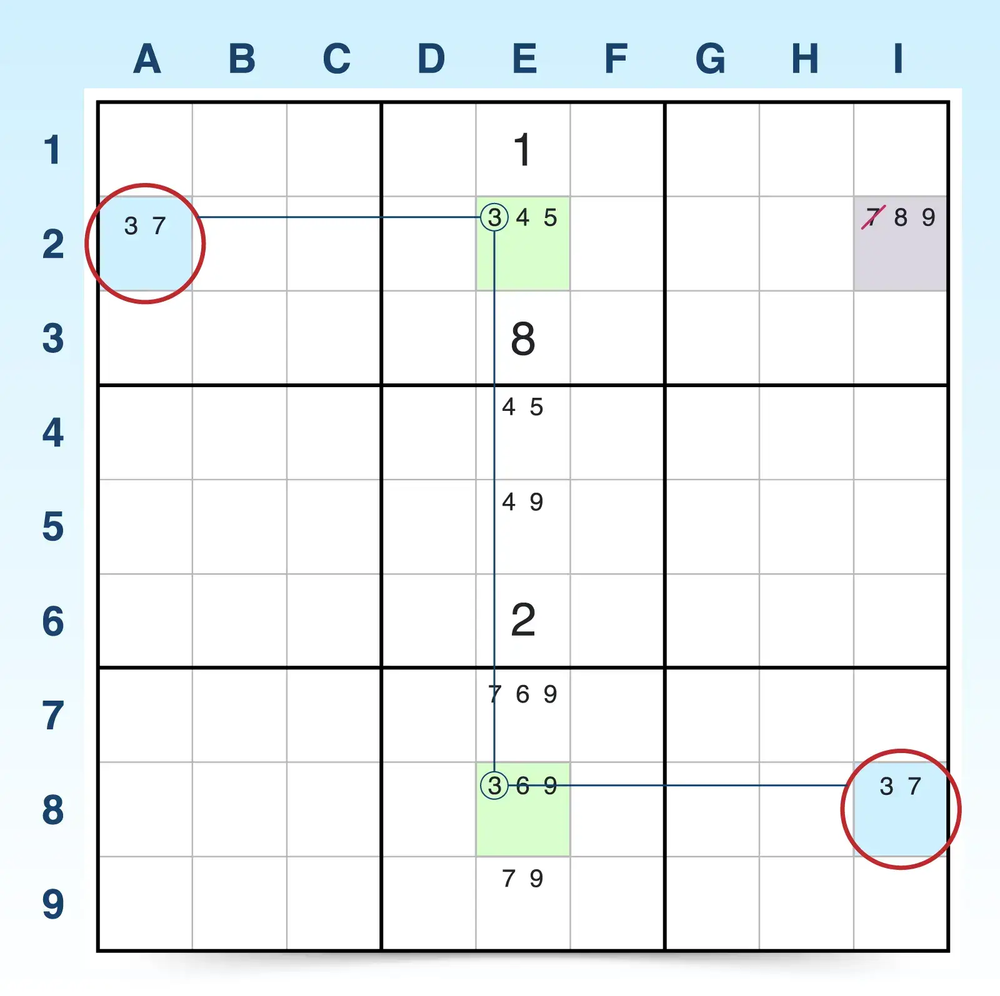
To find a W-wing:
- Find two bi-value cells that contain the same two candidates (x and y). These two bi-value cells must not see each other, meaning they don’t share the same row, column, or block. For example, A2 and I8 are both bi-value cells sharing the same two candidates (3, 7), but they don’t share a unit (row, column, block).
- Look for a strong link (a conjugate pair) for one of the candidates (x). A strong link exists if a candidate (x) appears only two times in a unit (row, column, or block). For example, candidate 3 appears in only E2 and E8 for that column E, creating a strong link.
- Confirm that the two strongly linked cells each see just one of the bi-value cells. The two strongly linked cells act as a bridge between the two bi-value cells, but they do not have to also create strong links with the bi-value cells. They only have to each see one of the bi-value cells. For example, the strong-link cell E2 only sees A2, and the strong-link cell E8 only sees I8.
- Eliminate candidate y from cells that see both bi-value cells. If the conditions are met, then candidate y can be eliminated from any cell that sees both bi-value cells because that candidate must be the answer in one of the bi-value cells. For example, I2 contains candidate 7, the bi-value cells’ y candidate, and because it sees both A2 and I8, the 7 can be eliminated.
2. XY-Wing (Y-Wing)
The Y-wing (or XY-wing) is an elimination technique that uses a chain of inference between three bi-value cells that share three candidates. In this strategy, the wings are called pincers, and because both pincers see the pivot cell but not each other, you can eliminate a candidate if certain conditions are met.
| Best for | Medium to hard puzzles where you find a lot of bi-value cells |
|---|---|
| Key components |
Pivot: 2 candidates (x, y) Pincer 1: 2 candidates (x, z) Pincer 2: 2 candidates (y, z) |
| Required link | The pivot cells must see both pincers, and the pincers must not see each other. |
| Elimination | Remove candidate z from any cell that sees both pincer cells. |
| Conditions for failure | The pincer cells see each other, or the pivot cell doesn’t see both pincers. |
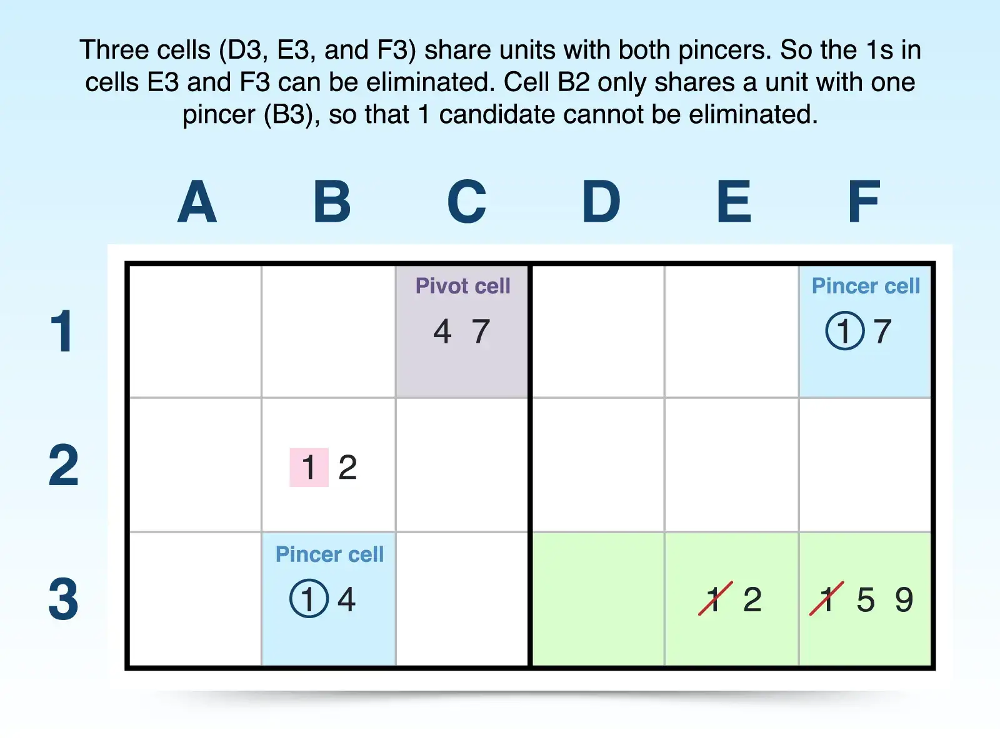
To find the Y-wing pattern:
- Identify one bi-value pivot cell with candidates (x, y). For example, C1 has only two candidates (4, 7).
- Find the first pincer cell with candidates (x, z). This bi-value cell must contain one candidate from the pivot cell, a second candidate not shared with the pivot cell, and must share a unit with the pivot cell. For example, B3 is in the same block as C3 and shares candidate 4, but B3 has just one other candidate (1) that is not shared with C1.
- Find the second pincer cell with candidates (y, z). This bi-value cell must share the other candidate from the pivot cell and share a second candidate with the pincer cell. This second pincer cell also shares a unit with the pivot cell, but it cannot share a unit with the first pincer cell. For example, F1 shares a row and candidate 7 with C3 (pivot). It also shares a second candidate (1) with B3 (pincer), but it does not share a unit with B3.
- Eliminate candidate z from any cells that see both of the pincer cells. Because of the linked relationship between the three bi-value cells, candidate z must be the answer in one of the pincer cells, and any cells that see both pincers can remove candidate z. For example, the pincers both see D3, E3, and F3, so 1 cannot be an answer in those cells and can be eliminated from E3 and F3.
Y-wings can offer many cells for elimination or only a single cell, depending on the proximity of the pincer cells. The farther apart the pincers are spread, the fewer cells you can look to for elimination. But eliminating a single number can often unlock a difficult puzzle you’ve been struggling to solve. So don’t ignore this strategy if the pincers are far apart.
3. XYZ-Wing
The XYZ-wing technique adds another candidate to the pivot cell of the XY-wing strategy. Instead of using three bi-value cells, this strategy utilizes a pivot cell with three candidates (x, y, and z) and two bi-value pincer cells (wings) that share subsets of candidates from the pivot cell.
This pattern creates a logical trap where one candidate must be true—allowing you to eliminate a shared candidate from cells that see all three. Because elimination depends on a cell seeing all three cells in the XYZ-wing, this is a more restricted elimination, but like other strategies, one elimination can lead to a cascade of others.
| Best for | Medium to hard puzzles where bi-value wings are near tri-value cells |
|---|---|
| Key components |
Pivot: 3 candidates (x, y, and z) Pincer 1: 2 candidates (x, z) Pincer 2: 2 candidates (y, z) |
| Required link | Pincers must share a unit with the pivot cell. |
| Elimination | Remove candidate z from any cells that see all three cells (pivot and both pincers). |
| Conditions for failure | The pincers don’t see the pivot cell, or the cells don’t have shared candidates. |
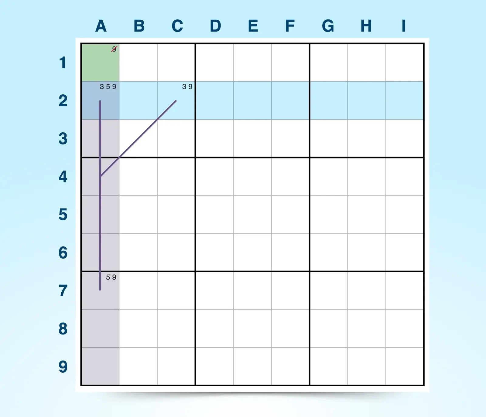
To find an XYZ-wing:
- Find a pivot cell with three candidates (x, y, and z). The pivot cell is similar to XY-wing except it now includes a third candidate, the candidate shared by the pincer cells. For example, A2 has candidates 3, 5, and 9.
- Find one pincer cell that sees the pivot and contains two shared candidates (x, z). This bi-value cell must contain two candidates from the pivot cell and see the pivot cell. For example, A7 is in the same column as A2 and has two of the three candidates (5, 9) contained in A2.
- Find a second pincer cell that sees the pivot and contains another two shared candidates (y, z). This bi-value cell must share a different candidate with the pivot cell than the first pincer shared, and it must also share a candidate with the pincer cell. This second pincer must share a unit with the pivot cell but not with the other pincer cell. For example, C2 is in the same block as A2 and contains candidates 3 and 9.
- Eliminate candidate z from any cell that sees all three cells. Unlike the XY-wing, candidate z can only be eliminated from cells that see both pincers and the pivot cell, making this a more constraining wing technique. For example, the only cell that all pincers and the pivot cells see is A1. So candidate 9 can be eliminated from A1.
Like the XY-wing, the closer the three XYZ-wing cells are, the more opportunities you’ll have to eliminate candidates.
Pattern and Fish Sudoku Strategies
These pattern-based techniques rely on the position of cells for a single candidate across rows and columns to make eliminations. Some Sudoku solvers refer to them as fish patterns or “fishy” because their complex grid shapes create nets to trap candidates inside a pattern and force eliminations.
When tackling fishy patterns, it helps to understand the following:
- Base sets: Rows or columns where the candidate appears
- Cover sets: Columns or rows overlapping base sets where the candidate also appears
The base sets contain strong links, which give you the leverage necessary in these patterns to eliminate candidates. Because a candidate must appear at least once in a base set and the candidate only appears in the cover set, then logic suggests that the overlap of base and cover sets is where the candidate must appear. Thus, you can eliminate cells in the cover sets that aren’t part of the base sets, and the following sections break down how each pattern works.
4. X-Wing
The X-wing technique acts like a perfectly symmetrical net that helps you eliminate candidates outside its pattern of four cells, each containing the same candidate, that forms a rectangle. Its name represents the X you can make by connecting the four cells in diagonal pairs and because you use a single candidate (x) to create the pattern.
You need the following to construct an X-wing:
- Two base sets: Two rows (or two columns) in which the same number (candidate x) appears in exactly two cells in each row (or column).
- Two cover sets: Two columns (or rows if base sets are columns) that overlap the base sets, overlapping at the specific cells in which the two candidates appear. Cover sets may also have other instances of the targeted candidate in the unit, but it will overlap with the targeted candidate of the base set.
Because the candidate must occupy one of the cells in each base set, you can eliminate that candidate from any other cells within the cover sets outside of the four cells that create the X-wing pattern.
| Best for | Hard to expert puzzles after exhausting intermediate techniques for singles, pairs, and triples |
|---|---|
| Key components | Four cells with the same candidate appearing twice in exactly two rows (or columns), with the pairs lining up in the same two columns (or rows) |
| Required link | Strong links across rows or columns for the same digit; candidate appears exactly twice in each row (or column) |
| Elimination | Eliminate the candidate from other cells in the same columns (or rows) of the X-wing that are not part of the four-cell pattern. |
| Conditions for failure | Matching cells don’t align in the same columns or rows. |
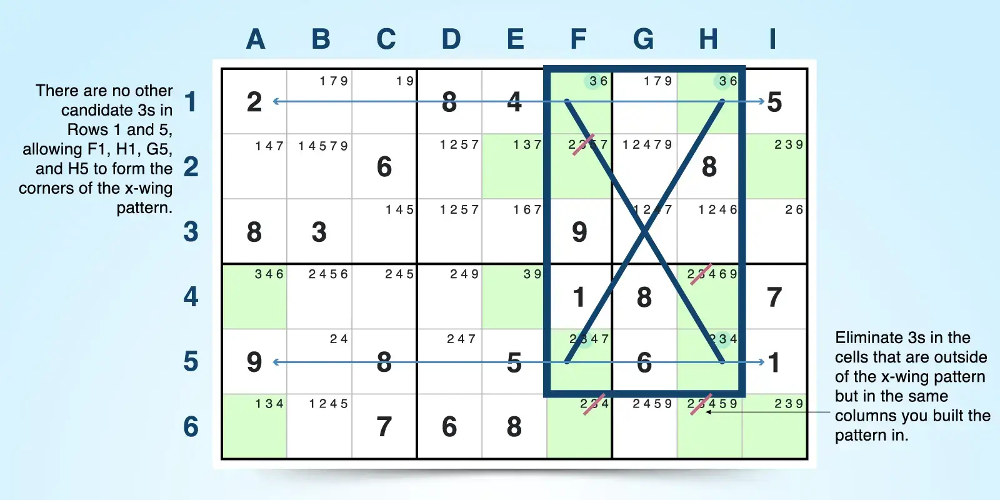
X-wings can be oriented in horizontal or vertical positions based on their base sets. Base sets in rows create horizontal X-wings, and base sets in columns create vertical X-wings.
To find a horizontal X-wing:
- Target a single candidate. Select a single candidate that appears often in the puzzle. For example, candidate 3 appears often.
- Look for two base sets. See if the targeted candidate appears exactly twice in two rows. Rows 1 and 5 have candidate 3 appearing just twice in F1 and H1 and F5 and H5.
- Confirm whether two cover sets overlap the base sets. If the targeted candidate appears exactly twice in two rows, see if those occurrences fall into just two columns. Candidate 3 appears just twice in rows 1 and 5, and those occurrences fall into two columns (F and H).
- Eliminate candidate x from cells in the cover sets outside of the pattern. If you’ve found an X-wing, you can eliminate the targeted candidate from any cell within the two columns of the cover set as long as it’s not one of the four cells making the pattern. For example, 3 can be found in other cells in columns F and H outside of the four-cell pattern. So candidate 3 can be eliminated from cells F2, F6, and H6.
To find a vertical X-wing, you follow the same steps as above but use columns for base sets and rows for cover sets.
5. Swordfish
The swordfish technique extends the X-wing. Instead of using two rows and two columns, it works with three rows and three columns, and the jellyfish extends to four rows and four columns. If the pattern you find doesn’t align in all three cover sets, you still may have found a useful pattern—sashimi swordfish—that can offer eliminations. A swordfish uses the following:
- Three base sets: Three rows (or three columns) in which the same number (candidate x) appears in exactly two or three cells in each row (or column). The swordfish strategy doesn’t require that the candidate appear three times in each unit of the base sets, but it must appear at least twice and no more than three times.
- Three cover sets: Cover sets make the difference in swordfish. You need three columns (or three rows if base sets are columns) to overlap the base sets. Cover sets must overlap at the specific cells in which the candidates appear and can contain other instances of the targeted candidate.
Because the candidate must go somewhere in the cells where base and cover sets overlap, you can remove the candidate from any other cells in the cover sets outside the overlapping cells that create the swordfish pattern.
| Best for | Hard to expert puzzles after wing-based strategies no longer lead to progress |
|---|---|
| Key components | Up to nine cells with the same candidate appearing in no more than three rows (or columns), and confined to the same three columns (or rows) |
| Required link | Strong links must appear across three rows (or columns) for the same digit in the base sets. |
| Elimination | Eliminate the targeted candidate from other cells in the cover sets that are not part of the base sets. |
| Conditions for failure | The candidate appears in more than three positions in a base set, or aligned positions don’t fall in the same three cover sets. |
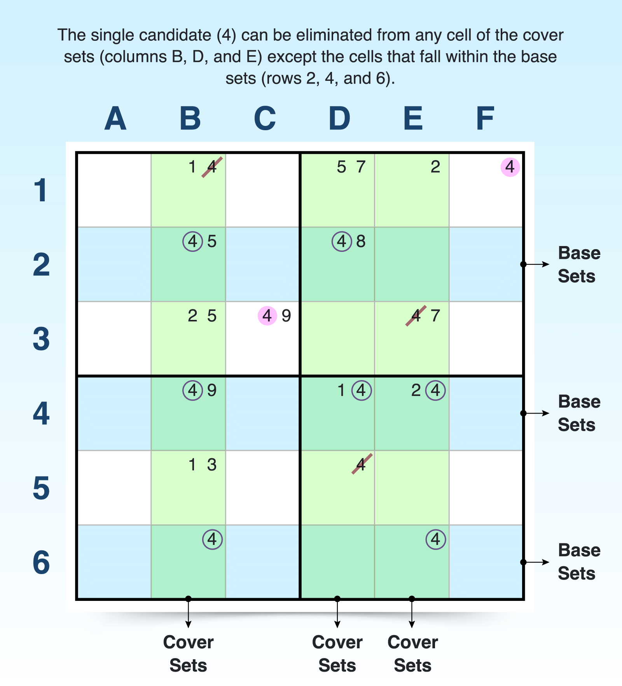
Like X-wings, swordfish patterns can be oriented in horizontal (base sets are rows) or vertical (base sets are columns) directions. To find a horizontal swordfish:
- Target a single candidate. This pattern requires strong links between a single candidate, so look for one that might appear often but beyond the X-wing pattern. The example below is focused on candidate 4.
- Look for three base sets. Look to see if your target candidate appears exactly two or three times in three rows. For example, 4 appears exactly twice in row 2, three times in row 4, and twice in row 6, forming base sets.
- Confirm three cover sets. To secure a swordfish pattern, the targeted candidate in the three rows must only appear in three columns (be restricted to just three columns). Check whether just three columns overlap the specific cells in which the targeted candidate appears for the three base sets. Remember that cover sets can have other instances of the target candidate, but it must overlap the base sets. For example, columns B, D, E overlap rows 2, 4, and 6 where candidate 4 appears, creating cover sets to complete the swordfish.
- Eliminate the targeted candidate from cells of the cover sets outside of the pattern. For example, any 4s in columns B, D, and E that don’t fall in rows 2, 4, and 6 can be eliminated.
You find a vertical swordfish pattern in the same way except base sets are columns and cover sets are rows. The overlapping rows form cover sets so that any candidate in those rows excluding the cells of the pattern can be eliminated.
6. Skyscraper
The skyscraper strategy is similar to the X-wing in that it uses four cells. However, this pattern-based elimination strategy requires the four cells to appear as follows:
- In two different columns (or rows)
- With a single candidate appearing only twice in each column
- With two cells lining up in exactly one row to form the floor
- With the other two cells appearing in two different rows to form the slanted roof
Although the four cells appear this way, you can also refer to this pattern using base sets and cover sets:
- Base sets: The two columns (or rows) where the candidate appears exactly twice, establishing a strong link
- Cover sets: The overlapping three rows (or columns) that establish the floor cells in the same row and the roof cells in two different rows
By analyzing the intersection and alignment of those cells, you can determine that the candidate must exist in one of two roof cells, allowing you to eliminate it from any cell that sees both.
| Best for | Hard to expert puzzles where you can spot positional patterns with a single candidate |
|---|---|
| Key components | 2 columns (or rows) with a candidate in exactly two spots in each column (or row); 2 floor cells that align with each column and 2 slanted roof cells |
| Required link | Each column (or row) must have a strong link, and the pattern must have a shared row (or column) anchor. |
| Elimination | Eliminate candidates from any cell that sees both roof cells. |
| Conditions for failure | The candidate appears more than twice in the column (or row), or the floor isn’t aligned in the same row (or column). |
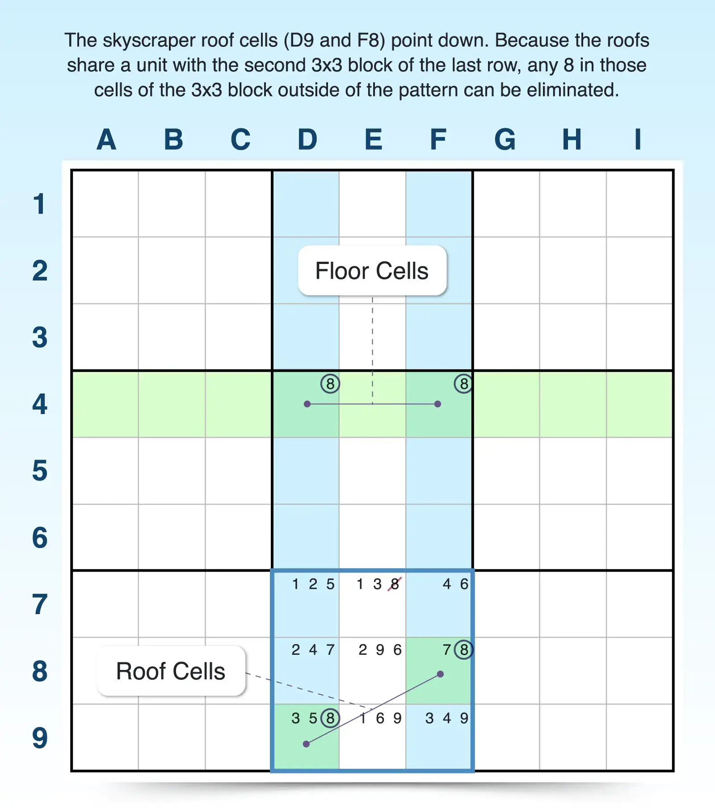
The skyscraper is a powerful technique because it can be formed in all directions. So the floor could be formed in rows with the roof pointing left or right, or the floor could be formed in columns with the roof pointing up or down.
To find a vertical skyscraper:
- Find two columns where a candidate appears exactly twice. You need a strong link in each column so the candidate can only appear twice. For example, candidate 8 can be found exactly two times in column D and two times in column F, creating a strong link for 8 in each column.
- Check for a shared row (the floor). If one cell from each column shares a row, you have a nice, level floor for your skyscraper. In this example, the 8s in columns D and F align in row 4, creating a floor.
- Identify two roof cells in two other rows. Now check the other two instances of candidate 8 in each column. If they fall into different rows, you have a skyscraper. For example, candidate 8 appears in row 8 for column F and row 9 for column D, creating the slanted roofline. So this skyscraper is vertical but pointing downward.
- Eliminate any candidate that sees both roof cells. Because you’ve established the pattern, you can eliminate any candidate 8 that sees both cells. In this example, since the roof cells share a 3x3 block, any 8 in that block (E7), aside from the roof cells, can be eliminated.
To find a horizontal skyscraper, you follow the same technique, just swap rows for columns and columns for rows. You will still use four cells, but in this orientation, you will find two rows where a candidate appears exactly twice. So the two floor cells will appear in just two rows and be aligned in one column, and the roof cells will appear in the same two rows but in different columns.
Set-Based Advanced Sudoku Techniques
Set-based strategies focus on the logical relationships between candidate sets. Unlike wings and fish strategies, they may not contain specific patterns but depend on how candidates are grouped, either within units (like locked candidates) or across special structures (like Unique Rectangles or ALS). They’re powerful tools when you can’t find eliminations through simpler patterns or chains.
As you work through these techniques, keep these core concepts in mind:
- The impossibility principle: These strategies rely on the assumption that every Sudoku puzzle has a unique solution. If placing a candidate would create ambiguity or a logical contradiction, it can be safely eliminated.
- Constraints or restrictions: These techniques depend on spotting tightly restricted patterns—such as limited placements within a unit—and how those placements affect or interact with other candidates across the grid.
7. Unique Rectangle
The unique rectangle strategy prevents a puzzle from having more than one valid solution. It targets patterns where four cells form a rectangle containing only two candidates. If no action is taken, these cells could allow two solutions—so you must eliminate candidates that would cause this ambiguity. This is different from the empty rectangle strategy that uses a conjugate pair
| Best for | Advanced puzzles where simpler techniques have stalled, especially mid-to-late game when pencil marks are filled and some cells have answers |
|---|---|
| Key components | Four cells forming a rectangle across two rows, columns, and blocks; all containing the same two candidates |
| Required link | The same two candidates must be placed in each cell creating a rectangle. |
| Elimination | Remove one of the two candidates from a cell (often the one with an extra candidate) to avoid forming a deadly rectangle. |
| Conditions for failure | The two candidates aren’t aligned in the same two columns and rows, creating a rectangle. |
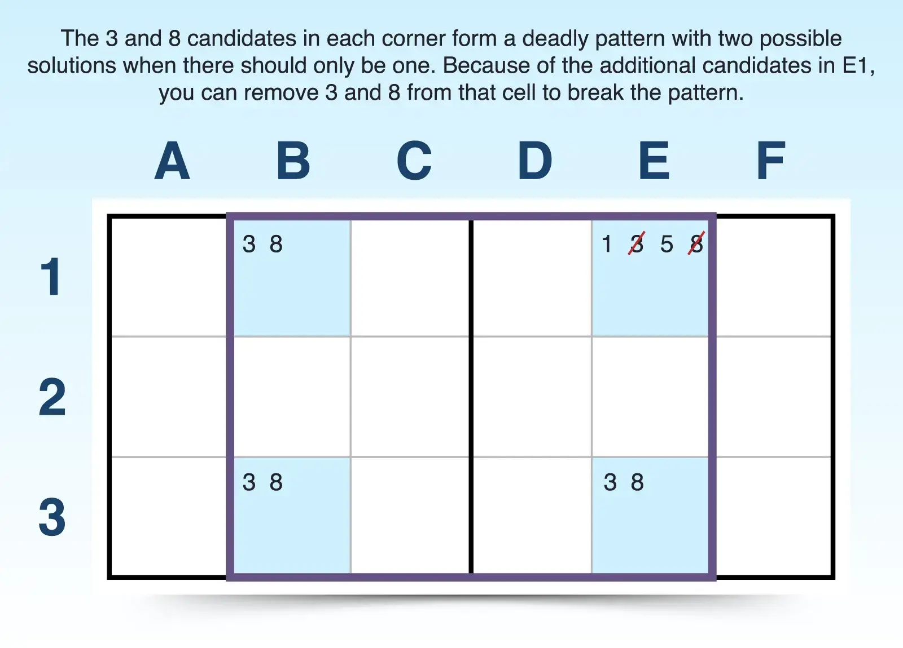
To find a unique rectangle:
- Find two cells in the same row (or column) that share the same two candidates. The two cells not only can have other candidates, but also the two targeted candidates can appear elsewhere in the unit (row or column). For example, 3 and 8 both appear together in cells B1 and E1. This pair of candidates appears in the same row (1).
- Find another row (or column) with the same pair of candidates, appearing in the same position. After you spot a pair appearing twice in one row, look for two occurrences of the same pair of candidates and ensure that they line up in the same columns (or rows) as the other two cells. For example, the pair (3, 8) appears in row 3 as well, and they fall into the same columns (B and E) as they did for row 1. This pair creates four corners of a rectangle.
- Confirm that the four cells fall into just two 3x3 blocks. To make this strategy work, the cells can only be in two 3x3 blocks. They can’t spread out farther. In this case, rows 1 and 3 and columns B and E do fall within just two blocks of the grid.
You end up with an invalid puzzle when all four cells that contain just two candidates form a “deadly rectangle” because Sudoku puzzles can only have one solution. So you need a way to break the pattern and make eliminations, and Sudoku has five types of unique rectangles. Each type offers different ways you can break the pattern.
8. Locked Candidates
When you find a candidate restricted within overlapping rows, columns, or blocks, you may be able to use the locked candidates strategy to make eliminations. Also called pointing and claiming candidates, this technique uses overlapping units (rows, columns, and blocks) to restrict a candidate to only one unit, allowing you to rule it out within the puzzle.
You can find two different types of locked candidates:
- Pointing: When a candidate appears only in one row or column within a block, it must go in that row/column within that overlapping block. So you can remove it from that row/column outside the block.
- Claiming: When a candidate appears only in one block within a row or column, it must go in that block—so you can remove it from the rest of the block.
| Best for | Easy to hard puzzles where you're scanning for overlap between blocks and lines |
|---|---|
| Key components | A candidate appears in just one row or column of an overlapping block or appears in just one block along an overlapping row or column. |
| Required link | The target candidate must be confined to one unit with an overlapping unit. |
| Elimination | Pointing candidates eliminate a candidate from the rest of the row or column outside the block, and claiming candidates eliminate a candidate from the rest of the block outside the row or column. |
| Conditions for failure | The candidate appears in more than one row or column within the block or in multiple blocks along the row or column. |
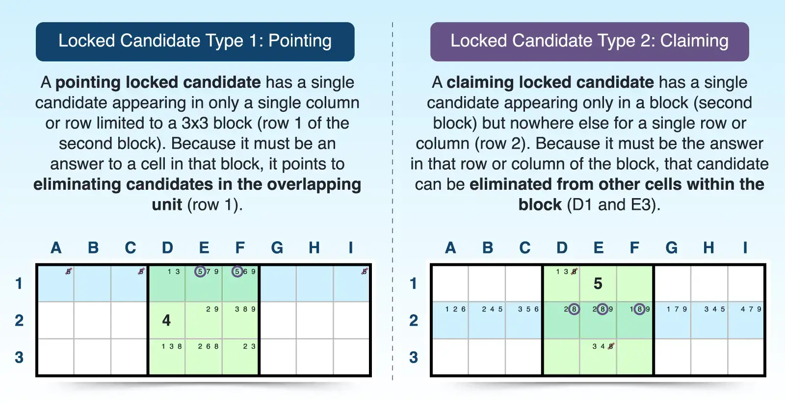
To find a pointing candidate:
- Scan each block for a candidate that appears only in one row or column of that block. The overlapping units are key to finding a locked candidate. For example, in the second block, candidate 5 appears only in row 1.
- Eliminate the candidate outside of the block. Because candidate 5 must be placed in that row within the box, you can eliminate it from other cells in row 1 outside of the second box.
To find a claiming candidate, you just scan each row or column for a candidate that appears only in one box along that line. For example, candidate 8 only appears in the second box for row 2. Because it appears only in that box for that row, it must be the answer where those two units overlap, so you can eliminate candidate 8 from other cells in the second box outside of those in row 2.
9. ALS-XZ
The ALS-XZ technique is an advanced Sudoku strategy based on the interaction of two almost locked sets (ALS). If the following conditions are true, you may be able to eliminate candidate z from other cells outside the ALSs:
- You have two ALSs. An ALS is a group of cells that have just one more possible candidate than cells in the group (N cells with N+1 candidates).
- Both ALS share the restricted candidate (x).
- This candidate must appear only once in each set.
- The cells containing x must see each other.
- Both ALSs share the common unrestricted candidate (Z). This candidate is found in both sets but is not restricted to be an answer in those sets.
To eliminate candidate z, the following must be true of z:
- Appears in a cell outside of the two almost locked sets
- Sees candidate z in all occurrences in both sets
| Best for | Hard to expert puzzles where chains or links no longer work |
|---|---|
| Key components | Two ALSs sharing one restricted candidate (x) and one unrestricted candidate (z) |
| Required link | The cells containing restricted candidate x must share a unit. |
| Elimination | Eliminate candidate z from any cell that sees all instances of both ALSs. |
| Conditions for failure | Candidate z appears only once, or the x candidates don’t see each other. |
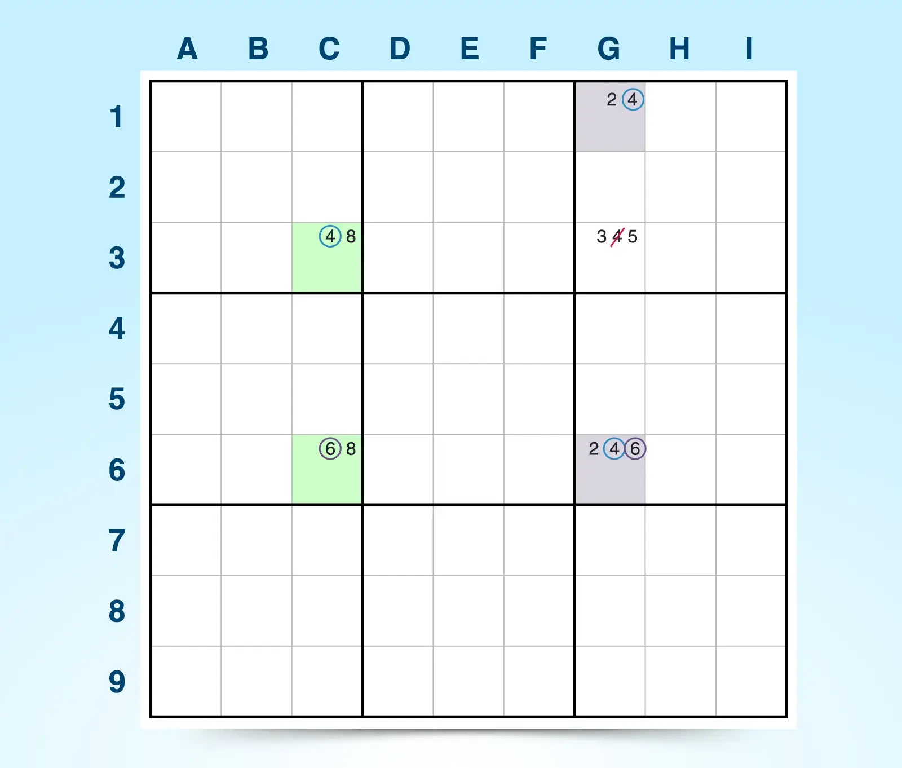
To find eliminations with ALS-XZ:
- Identify two almost locked sets. To find an ALS, look for a group of cells (N) that have just one more possible candidate than the number of cells. For example, column C has an almost locked set (ALS 1) with three possible candidates (4, 6, and 8) in just two cells. Column G has another locked set (ALS 2) with three possible candidates (2, 4, and 6) in just two cells.
- Find a restricted common candidate (x). The restricted common candidate must appear only once in each ALS and the cells containing the restricted candidate must see each other. For example, ALS 1 has candidate 6 in cell C6, and ALS 2 has the same candidate 6 in cell G6. C6 and G6 share a row and appear only once in each ALS, making 6 the restricted common candidate.
- Check for a shared unrestricted candidate (z). The unrestricted common candidate isn’t restricted to one cell, meaning it can appear more than once in each ALS, and the cells in each ALS that contain the unrestricted candidate do not have to see each other. Although 4 appears just once in ALS 1 in C3, candidate 4 appears twice in ALS 2 in G1 and G6. Because none of the cells with candidate 4 see each other, both ALSs share a common unrestricted candidate (4).
- Eliminate z from cells outside the ALSs that see all instances of z inside the ALSs. If the set satisfies all requirements, you can eliminate any instance of z when it appears outside of each ALS and can see all the cells in which z appears inside the ALSs. For example, you can eliminate the 4 in G3 because G3 shares a column with G1 and G6 and shares a row with C3—G3 can see all instances of candidate 4 in both ALSs.
Like with many advanced strategies, the closer the required cells are to each other, the more opportunities you have for elimination because of the overlapping units.
Chain-Based Advanced Sudoku Strategies
Chain techniques build logic chains by linking candidates through strong and weak inferences, often spanning multiple cells and units. These include Forcing Chains, X-cycles, and AICs, where each link carries a condition ("if this is false, that must be true"). Chain-based strategies can eliminate candidates or even confirm a truth (verity) through its logic.
10. Forcing Chains
Forcing chains uses if-then logic to explore consequences from an assumed starting point, the easiest of which is a bi-value cell. You simply build a chain of implications (if A is true, then B must be false, and so on) and follow the answers to see whether you can confirm or eliminate candidates.
| Best for | Expert and evil-level puzzles where patterns aren't immediately visible and chain logic is necessary |
|---|---|
| Key components | Start with a bi-value cell or limited candidate and trace conditional chains (if this, then that). |
| Required link | Logical implications must use a series of strong and/or weak links between candidates across multiple cells. |
| Elimination | If all logical paths result in the same outcome, you can confirm that answer in the final cell, and eliminate all other candidates in that cell. |
| Conditions for failure | The chains lead to different results and don’t narrow the possibilities, or if no contradiction is found in either path, no conclusion can be drawn. |
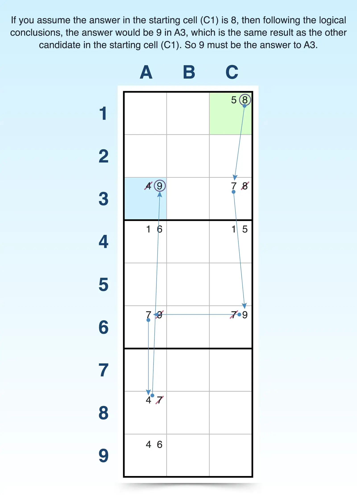
To use the forcing chains technique:
- Start with a bi-value cell. The easiest way to start this strategy is by choosing a cell with just two candidates. For example, C1 has two candidates (5, 8).
- Follow the first candidate’s chain of logic. Select one candidate to start with, then trace the conclusions in other cells. For example, if 5 is the answer to C1 is 5, then C4 must be 1; A4 must be 6; A9 must be 4; and A3 must be 9.
- Follow the chain of logic for the remaining candidates in the starting cell. You need to discover if all the candidates result in the same conclusion. So if C1 is 8, then C3 must be 7; C6 must 9; A6 must be 7; A8 must be 4; and A3 must be 9.
- Compare outcomes. The outcomes direct your next move in the puzzle, whether it be to confirm or eliminate candidates. Because both candidates confirm that A3 is 9, then A3 must be 9, and you can eliminate other candidates (4) from that cell (A3).
The outcomes aren’t always the same, and because the outcomes determines what you do next, remember that the possible outcomes include:
- If both chains lead to the same result, you can confidently place that value in the final cell—it must be correct no matter which path is true.
- If each path leads to a different candidate for the same cell, you know that only those two candidates are possible in that cell. You can safely eliminate any other digits from it.
- If one chain results in a contradiction, that means the starting assumption was false. You can eliminate that original candidate from the first cell.
11. X-Cycles
X-cycles are a powerful form of alternating inference chains (AIC) used to eliminate candidates based on logical loops. Built entirely from a single candidate and alternating strong/weak links, X-cycles form closed chains that allow you to eliminate that candidate from other cells without guessing. When built correctly, the logic of the loop traps the candidate into a predictable outcome. Some X-cycles even create separate strategies, like turbot fish.
| Best for | Expert and evil-level puzzles that lack simpler elimination techniques |
|---|---|
| Key components | A closed chain of a single candidate using alternating strong and weak links across a set of cells |
| Required link | The chain must alternate between strong and weak links and be a closed loop. |
| Elimination | You can eliminate candidates from off-chain cells that see both ends of a strong or weak link. |
| Conditions for failure | The loop doesn’t alternate properly, uses multiple candidates, or doesn’t form a closed loop. |
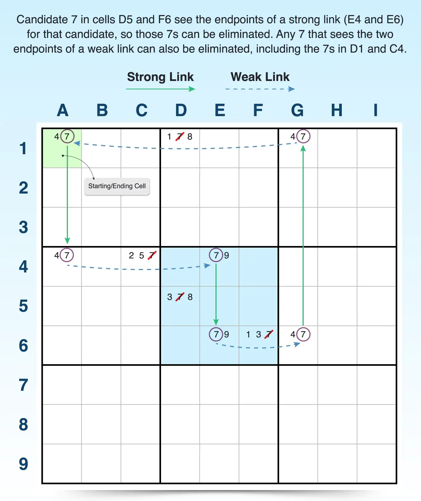
To find an X-cycle:
- Pick a single candidate. Look across rows and columns for a candidate that has some strong and weak links in the puzzle. For example, candidate 7 appears multiple times in varying strong and weak link positions.
- Build a loop with the strong and weak links of the candidate. A strong link exists when a candidate appears exactly twice in a unit, so if one is false, the other must be true. A weak link typically exists when a candidate appears three or more times in a unit, so if one is true, the others must be false. But if one is false, the others aren’t necessarily true. For example, A1 to A4 is a strong link because 7 only appears twice in column A, which means it must be an answer to either A1 or A4. But A4 to E4 is a weak link because 7 appears three times in row 4. So if 7 isn’t the answer to A4, it doesn’t confirm it as the answer for C4 or E4. As you continue, alternating links, you end up back at A1, the starting cell.
- Eliminate candidates that see both ends of a link. If any candidate outside of the cells in the loop sees both ends of a weak or strong link, it can be eliminated. For example, the 7s in C4, D1, D5, and F6 can all be eliminated because those cells see both endpoints of a strong or weak link. One of those endpoints must be a 7, so any 7 that sees both endpoints can be eliminated.
When pencil marks and hidden pairs have become second nature, you’re ready to take your Sudoku game to the next level. When you’re faced with hard puzzles, these advanced solving techniques can offer you a logical path to find answers and eliminate candidates whenever you play Sudoku online.